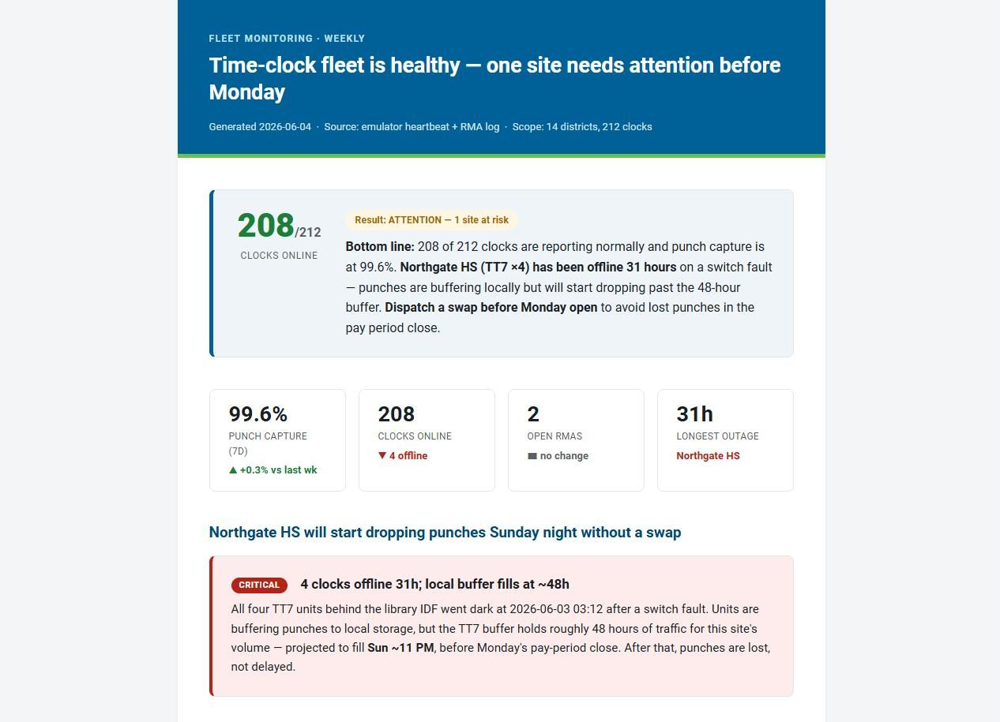

Takes your data or findings and produces a single, self-contained, STA-branded HTML report - a digest, status update, diagnostic, monitoring or scan summary, or analysis. It leads with the bottom line, then picks the right elements for the report type from a rich library (KPI bands, charts, meters, gauges, heatmaps, timelines, and color-plus-shape status indicators) so each report fits its content instead of every report looking the same.
It can also assemble several finished reports into one tabbed "package" file for sharing.
Any time you want a clean, branded write-up of findings to share or keep - instead of a raw table, a wall of text, or a plain chat answer.
"make an HTML report"
"turn this into a report"
"write this up"
"build a digest"
"format this as a report"
Reports default to internal STA styling (full color). If the report is going to a customer or anyone outside STA, say so up front - it will switch to an accessible, customer-facing version before building.

What this skill needs in order to run. Added 2026-08-20.
Skills - None.
Connectors / MCP servers - None.
Folder access - Write access to the report destination. Reports route to a dated tree, and the filename convention is YYYY-MMDD Plain English Title.html - year-dash-monthday, Title Case with spaces, deliberately not full ISO 8601 and deliberately not a slug.
KB modules / context files - None.
Repos - None.
If something is missing - A missing destination folder is LOUD. Two SILENT ones: reports are styled for internal use by default, so shipping one externally without the accessible variant looks finished and is not; and every report must stand alone - a report that references an earlier report reads as continuous when the reader has not seen the other one.